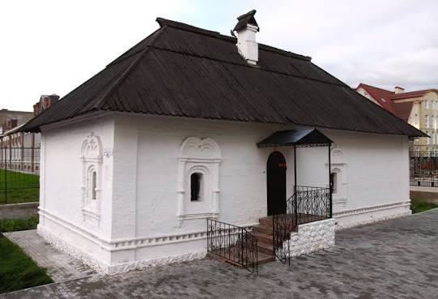
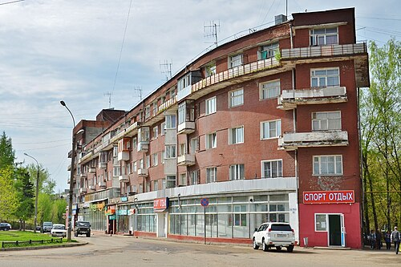
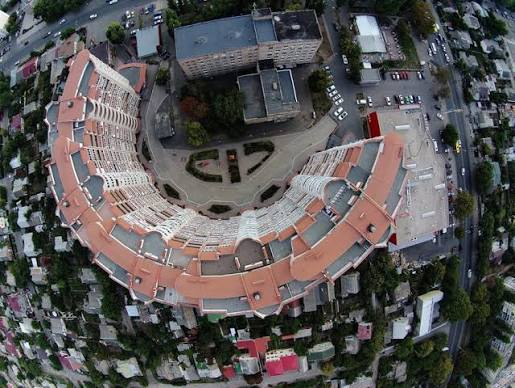
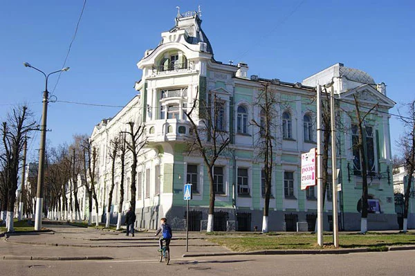
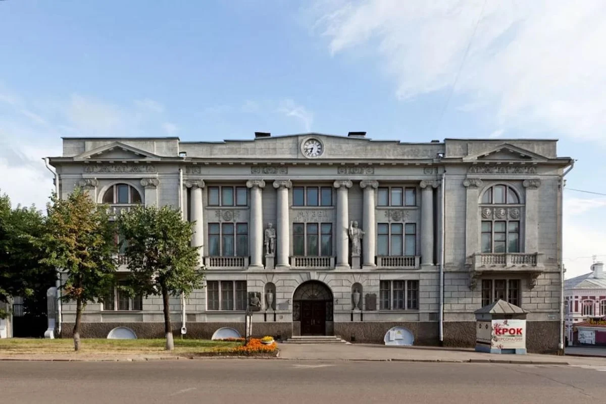
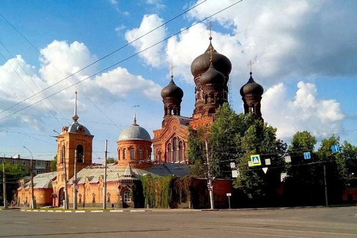

Город конструктивизма, текстильной истории и уникальной архитектуры. Здесь сохранились памятники XVII века, авангардные здания советской эпохи и музеи мирового уровня.
Смотреть достопримечательностиИваново — административный центр Ивановской области, известный как текстильная столица России и один из крупнейших центров архитектуры конструктивизма. В городе сохранились уникальные памятники гражданской архитектуры XVII века и выдающиеся объекты советского авангарда.
Город вырос из села Иваново и стал одним из крупнейших текстильных центров страны.
Основание: XVI век
Иваново считается музеем конструктивизма под открытым небом.
Более 40 памятников авангарда
Город входит в маршруты Золотого кольца и ежегодно принимает тысячи туристов.
Центр культуры и истории
Шесть самых известных объектов города Иваново

Старейшее сохранившееся кирпичное здание Иваново, построенное в конце XVII века как приказная изба для управляющих селом Иваново. Позднее принадлежало купцу Осипу Щудрову, от которого и получило своё название. Сегодня считается одним из символов города и памятником архитектуры федерального значения.

Дом-корабль — один из самых известных памятников советского конструктивизма в России. Здание было построено в 1929–1930 годах по проекту архитектора Даниила Фридмана. Благодаря закруглённому фасаду и вытянутой форме сооружение напоминает огромный морской лайнер. Сегодня Дом-корабль считается архитектурным символом Иваново.

Дом-подкова — необычный жилой комплекс эпохи конструктивизма, построенный в начале 1930-х годов. С высоты здание имеет форму подковы, что и дало ему название. Этот объект входит в число самых известных памятников архитектуры советского авангарда.

Музей расположен в бывшем особняке промышленника и коллекционера Дмитрия Бурылина. Экспозиция рассказывает об истории текстильной промышленности региона, которая принесла Иваново славу «текстильной столицы России».

Один из крупнейших музеев Центральной России. Основан известным коллекционером Дмитрием Бурылиным. В коллекции представлены предметы искусства, оружие, редкие книги, археологические находки и экспонаты из разных стран мира.

Один из крупнейших православных монастырей Ивановской области. Главный храм комплекса был построен в начале XX века. Сегодня монастырь является важным духовным центром региона и привлекает паломников со всей России.
Нажмите на фотографию для просмотра в полноэкранном режиме
Что делает Иваново особенным городом России
Иваново получил известное прозвище благодаря большому числу женщин, работавших на текстильных предприятиях города.
В Иваново находится одна из крупнейших коллекций архитектуры конструктивизма в России.
С XIX века город являлся крупнейшим центром текстильного производства страны.